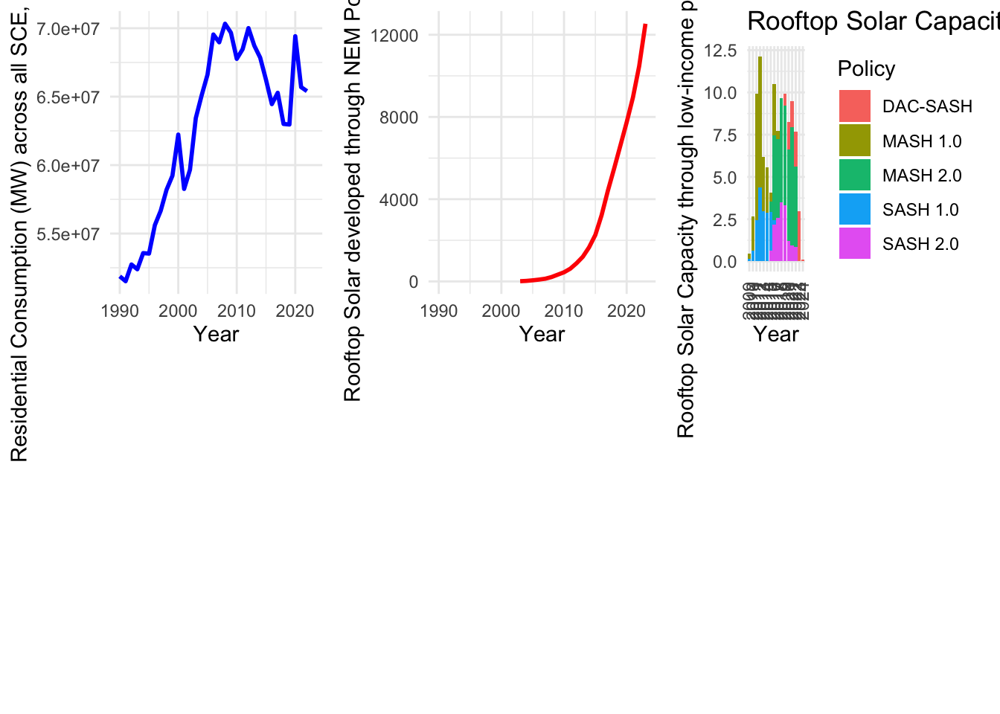

here() starts at /Users/meetmuchhala/Desktop/Winter 2024/ESM244_ShinyApp_IngmanMucchalaRuggles
library(tsibble)
Attaching package: 'tsibble'
The following objects are masked from 'package:base':
intersect, setdiff, union
library(feasts)
Loading required package: fabletools
library(fable)
Loading the utility consumption dataset
# All utilities data utility_consum_df <-read_csv(here('data/output 1/elec_by_utility_ca.csv')) %>% janitor::clean_names()
Rows: 1476 Columns: 5
── Column specification ────────────────────────────────────────────────────────
Delimiter: ","
chr (2): Utility Type, Utility Name
dbl (3): Year, Residential, Total Usage
ℹ Use `spec()` to retrieve the full column specification for this data.
ℹ Specify the column types or set `show_col_types = FALSE` to quiet this message.
## These are the investor owned utilities aggregated_all_ious <- utility_consum_df %>%filter(utility_type =='Investor owned utility') %>%group_by(year) %>%summarize(total_residential =sum(residential))## These are all other utilities of california without the 3 top utilities for NEM implementationaggregated_other_utilities <- utility_consum_df %>%filter(!utility_type =='Invester owned utility') %>%group_by(year) %>%summarize(total_residential =sum(residential))
Rows: 22 Columns: 3
── Column specification ────────────────────────────────────────────────────────
Delimiter: ","
chr (1): Category
dbl (2): Capacity in Year, Prior Years' Capacity
ℹ Use `spec()` to retrieve the full column specification for this data.
ℹ Specify the column types or set `show_col_types = FALSE` to quiet this message.
Warning: There was 1 warning in `mutate()`.
ℹ In argument: `year = as.integer(year)`.
Caused by warning:
! NAs introduced by coercion
all_years <-data.frame(year =c(1990:2023))# Merge datasets for 3 IOUs and NEMutility_nem_ious <-merge(all_years, aggregated_all_ious,by ="year", all.x =TRUE) %>%left_join(nem_capacity_df, by ="year") utility_nem_ious$total_ious_mw <- utility_nem_ious$total_residential *1000aggregated_other_utilities$total_other_mw <- aggregated_other_utilities$total_residential *1000
# Plotting for each scenario residential consumptionplot_ious <-ggplot(utility_nem_ious, aes(x = year, y = total_ious_mw)) +geom_line(color ="blue", size =1) +labs(x ="Year", y ="Residential Consumption (MW) across all SCE, SDGE and PGE") +theme_minimal()
Warning: Using `size` aesthetic for lines was deprecated in ggplot2 3.4.0.
ℹ Please use `linewidth` instead.
# Plotting NEM capacityplot_nem <-ggplot(utility_nem_ious, aes(x = year, y = prior_years_capacity)) +geom_line(color ="red", size =1) +labs(x ="Year", y ="Rooftop Solar developed through NEM Policy (MW)") +theme_minimal()low_income_solar <-read_csv(here('data','output 1', 'li-capacity-chart.csv')) %>%pivot_longer(cols =-Category, names_to ="policy", values_to ="values")
Rows: 16 Columns: 6
── Column specification ────────────────────────────────────────────────────────
Delimiter: ","
dbl (6): Category, MASH 2.0, MASH 1.0, SASH 2.0, SASH 1.0, DAC-SASH
ℹ Use `spec()` to retrieve the full column specification for this data.
ℹ Specify the column types or set `show_col_types = FALSE` to quiet this message.
low_income_solar$Category <-as.character(low_income_solar$Category)plot_li <-ggplot(low_income_solar, aes(x = Category, y = values, fill = policy)) +geom_bar(stat ="identity", position ="stack") +# Use position = "stack"labs(title ="Rooftop Solar Capacity by Policy and Year (Low-Income)",x ="Year",y ="Rooftop Solar Capacity through low-income policies (MW)",fill ="Policy") +theme_minimal() +scale_x_discrete() +theme(axis.text.x =element_text(angle =90, vjust =0.5, hjust =1))plot_li
Warning in as_grob.default(plot): Cannot convert object of class numeric into a
grob.
Warning in as_grob.default(plot): Cannot convert object of class numeric into a
grob.
print(combined_plot)

Figure 1: The plots(from left to right) represent the following: 1. Historical Total Energy Consumption data across three largest investor owned utilities in California (SCE, SDGE and PGE), 2. Rooftop solar capacity developed across California through NEM Policy under three IOUs territory, 3. Rooftop solar capacity developed across California in low-income communities through various policies under three IOUs territory
missing_values <-is.na(utility_nem_ious$capacity_in_year) |!is.numeric(utility_nem_ious$capacity_in_year)# Remove rows with missing or non-numeric valuesutility_nem_ious <- utility_nem_ious[!missing_values, ]# Now try plotting the models again# Fit the modelsmodel1 <-lm(total_ious_mw ~ year + capacity_in_year, data = utility_nem_ious)model2 <-lm(total_ious_mw ~ year * capacity_in_year, data = utility_nem_ious)model3 <-lm(total_ious_mw ~-1+ year + capacity_in_year, data = utility_nem_ious)# Create a dataframe for predictionpred_data <-expand.grid(year =seq(min(utility_nem_ious$year), max(utility_nem_ious$year), by =1),capacity_in_year =seq(min(utility_nem_ious$capacity_in_year), max(utility_nem_ious$capacity_in_year), length.out =100))# Make predictionspred_model1 <-predict(model1, newdata = pred_data)pred_model2 <-predict(model2, newdata = pred_data)pred_model3 <-predict(model3, newdata = pred_data)
# Plot the data and regression lineslibrary(ggplot2)ggplot(utility_nem_ious, aes(x = capacity_in_year, y = total_ious_mw)) +geom_point() +geom_line(data = pred_data, aes(y = pred_model1, color ="Model 1")) +geom_line(data = pred_data, aes(y = pred_model2, color ="Model 2")) +geom_line(data = pred_data, aes(y = pred_model3, color ="Model 3")) +scale_color_manual(values =c("Model 1"="orange2", "Model 2"="lightblue", "Model 3"="darkgreen")) +labs(x ="Rooftop Solar Capacity in Year (NEM Policy)", y ="Total three IOUs energy consumption (MW)", color ="Model") +theme_minimal()
Figure 2: The plot represents the linear regression models (Total Energy Consumption ~ Year + Rooftop Solar Capacity (NEM) ) with model 3 showcasing 99% adjusted R^2 values and <0.05 p-value significance of the impacts of NEM rooftop solar development on total energy consumption across SCE, SDGE and PGE.
effect_size_model1 <-summary(model1)$fstatistic[1] / (summary(model1)$fstatistic[1] +summary(model1)$fstatistic[2])effect_size_model2 <-summary(model2)$fstatistic[1] / (summary(model2)$fstatistic[1] +summary(model2)$fstatistic[2])effect_size_model3 <-summary(model3)$fstatistic[1] / (summary(model3)$fstatistic[1] +summary(model3)$fstatistic[2])# Display effect size for each modeleffect_size_model1
value
0.7261521
effect_size_model2
value
0.5907123
effect_size_model3
value
0.999784
library(kableExtra)
Attaching package: 'kableExtra'
The following object is masked from 'package:dplyr':
group_rows
# Create a data frame with BIC and effect size for each modelmodel_data <-data.frame(Model =c("Model 1", "Model 2", "Model 3"),Effect_Size =c(effect_size_model1, effect_size_model2, effect_size_model3))# Create the table using kableExtratable <-kable(model_data, "html") %>%kable_styling(bootstrap_options =c("striped", "hover"), full_width =FALSE)# Display the tabletable
Model
Effect_Size
Model 1
0.7261521
Model 2
0.5907123
Model 3
0.9997840
Set of A utilities , in Linear Regression take a interaction terms between utility group A or B ~ year |f1 <- energy consum ~ year + group f2<- energy consum ~ year * group